Warrior
Arms, Fury, and Protection — each shaping a different playstyle. The Arms tree focuses on powerful weapon strikes, bleed effects, and PvP utility, making it a strong choice for battlegrounds and leveling. Fury emphasizes dual-wielding, high sustained damage, and raid viability, offering some of the highest DPS potential in the game. Protection, meanwhile, turns a Warrior into a resilient tank, excelling at holding aggro and absorbing damage in dungeons and raids. Because respeccing can be costly, Warriors often plan their builds to level efficiently, then respec into specialized roles for endgame content. Choosing the right talent path can make the difference between a reliable tank, a lethal PvP duelist, or a top-tier DPS machine. Below, we have outlined the ideal talents for a one-handed DPS warrior, and a two-handed DPS warrior.
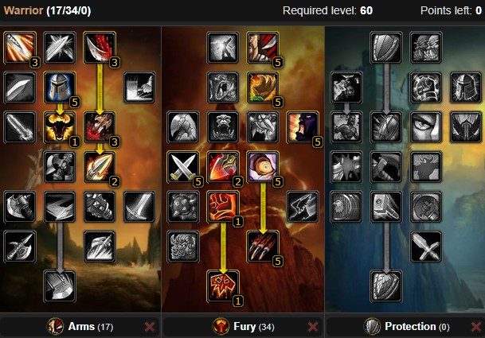
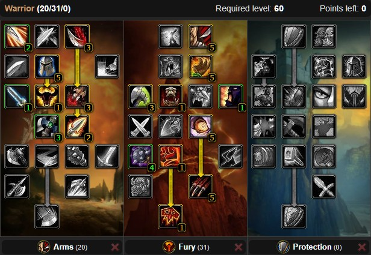
Paladin
Holy, Protection, and Retribution — each offering a unique role within a group or solo play. Holy focuses on powerful single-target and group healing, making it the go-to choice for dungeon and raid support. Protection enhances survivability and threat generation, allowing Paladins to act as durable off-tanks or specialize in tanking large groups of enemies. Retribution emphasizes melee damage and strong burst potential, making it attractive for leveling and PvP encounters. Because Paladins excel at support and utility, their talent choices can dramatically influence their effectiveness in raids, battlegrounds, or solo content. Careful planning of a Paladin’s build ensures a balance of survivability, damage, and group-wide benefits like blessings and auras. Below, we have outlined the ideal talents for a DPS paladin, and a healing paladin.
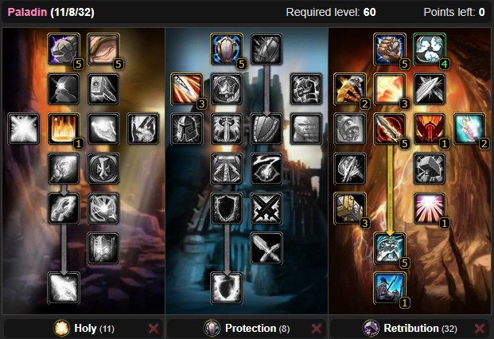
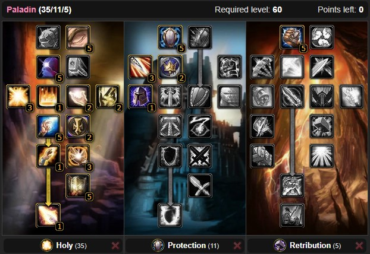
Shaman
Elemental, Enhancement, and Restoration — each emphasizing a different role and playstyle. Elemental focuses on ranged spell damage, using lightning and fire abilities to unleash powerful bursts in both PvP and PvE encounters. Enhancement enhances melee combat, weapon imbues, and totem synergy, making it ideal for leveling and hybrid DPS/support roles. Restoration specializes in healing and group support, turning the Shaman into a cornerstone of raid and dungeon groups with powerful totems and efficient heals. Because Shamans are only available to the Horde in Classic, their unique utility (like Bloodlust, Windfury Totem, and cleansing abilities) makes them highly sought after. Choosing the right build allows Shamans to switch between damage, support, and healing while maximizing the strengths of their totems and hybrid nature. Below, we have outlined the ideal talents for two different types of DPS shamans.
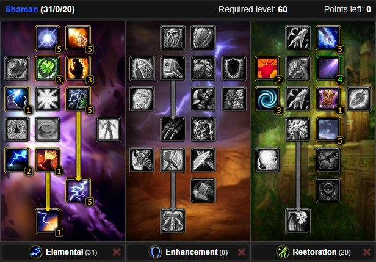
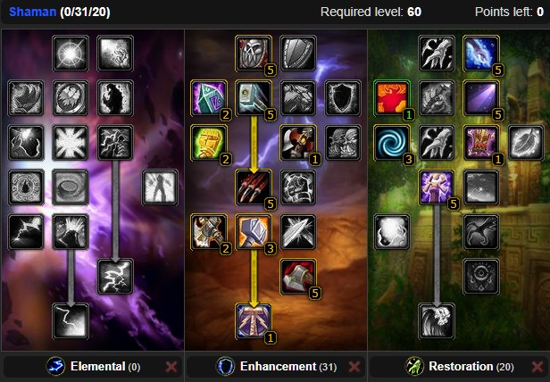
Hunter
Beast Mastery, Marksmanship, and Survival — each offering a distinct approach to ranged combat and utility. Beast Mastery focuses on enhancing your pet’s strength, survivability, and damage, making it ideal for solo leveling and open-world content. Marksmanship emphasizes powerful ranged weapon attacks, improved critical strikes, and high burst damage, making it a favorite for PvP and endgame raiding. Survival leans into traps, crowd control, and melee-oriented utility, offering a more tactical style with increased stamina and situational bonuses. Because Hunters excel at solo play and kiting, their talent choices greatly influence how easily they can handle group content or dominate in battlegrounds. Choosing the right build allows a Hunter to balance pet management, ranged power, and tactical control for maximum effectiveness in Azeroth. Below, we have outlined the ideal talents for two different types of DPS hunters.
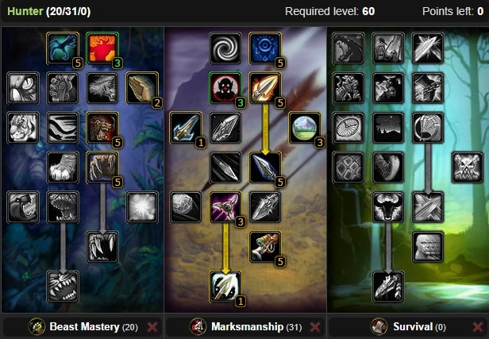
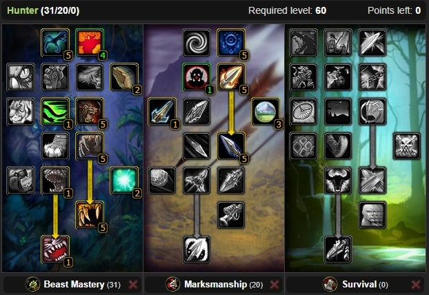
Rogue
Assassination, Combat, and Subtlety — each designed to refine a different aspect of stealthy melee combat. Assassination focuses on poisons, critical strikes, and burst damage, making it ideal for taking down targets quickly in PvP or leveling efficiently. Combat emphasizes sustained melee damage, weapon specialization, and improved energy regeneration, making it the go-to choice for raiding and high DPS output in long fights. Subtlety enhances stealth abilities, crowd control, and opening attacks, giving Rogues unmatched control and survivability in PvP encounters. Because Rogues thrive on precision, timing, and resource management, their talent builds heavily influence their ability to excel in specific roles — whether that’s ambushing enemies in battlegrounds or topping the damage charts in dungeons and raids. Below, we have outlined the ideal talents for two different types of DPS rogues.
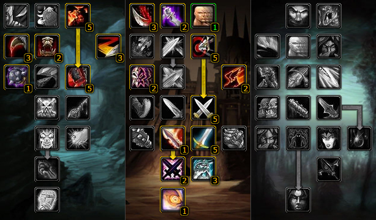
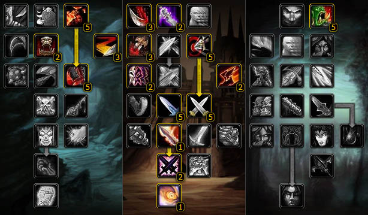
Priest
Discipline, Holy, and Shadow — each catering to different strengths in healing and damage. Discipline enhances mana efficiency, shields, and utility spells, making it a great support option in both PvE and PvP. Holy focuses on powerful direct and group healing, turning the Priest into one of the most reliable healers in dungeons and raids. Shadow, on the other hand, transforms the Priest into a ranged damage dealer, utilizing damage-over-time spells and mind-based attacks to excel in solo play and PvP encounters. Because Priests are one of the most versatile support classes in Classic, their talent choices directly impact their performance in healing-intensive fights or damage-focused roles. A well-planned build allows Priests to balance survivability, mana management, and group support, making them indispensable in almost every situation. Below, we have outlined the ideal talents for two different types of priests, one DPS, and one healing.
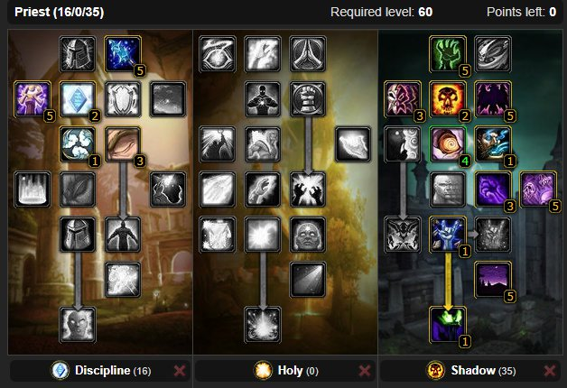
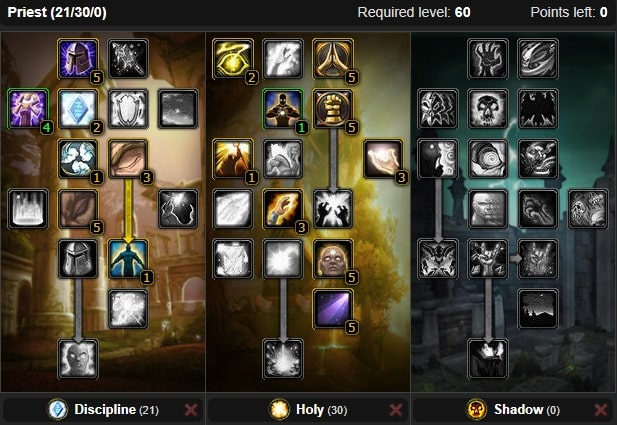
Mage
Arcane, Fire, and Frost — each offering a distinct style of ranged spellcasting. Arcane focuses on spell efficiency, utility, and powerful burst spells like Arcane Power, making it a strong hybrid or support option. Fire specializes in high burst damage and critical strikes, ideal for players who enjoy explosive DPS in dungeons, raids, and PvP. Frost emphasizes control, slowing effects, and survivability, making it the preferred choice for leveling, kiting enemies, and battleground dominance. Because Mages have low health and armor, their talent builds dramatically affect their survivability and damage output. Choosing the right tree can mean the difference between a steady, controlled playstyle and an all-out DPS powerhouse. Proper talent planning also allows Mages to maximize their unique utility spells like portals, food, and crowd control. Below, we have outlined the ideal talents for two different types of DPS mages.
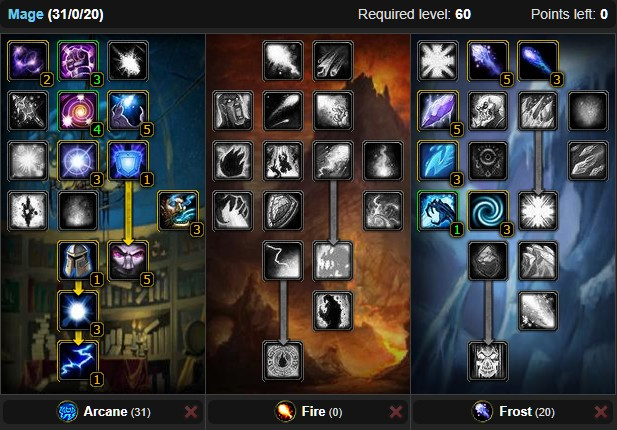
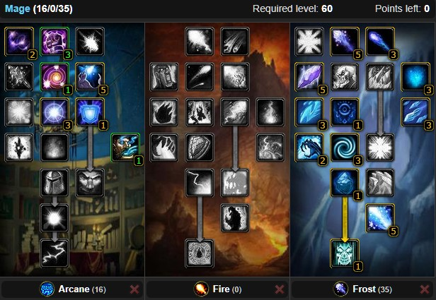
Warlock
Affliction, Demonology, and Destruction — each shaping their unique playstyle as masters of shadow magic and summoned demons. Affliction focuses on damage-over-time spells and curses, allowing Warlocks to steadily wear down enemies over time, making it excellent for PvP and solo play. Demonology enhances the power and survivability of their pets, granting improved utility and tanking ability through demons like Voidwalkers and Felhunters. Destruction emphasizes direct damage, burst spells, and critical strikes, ideal for dealing high single-target or AoE damage in raids and PvP. Because Warlocks manage multiple resources, pets, and DoTs, their talent builds are crucial to maximizing damage output, survivability, and utility, making careful planning essential for both solo adventures and endgame group content. Below, we have outlined the ideal talents for two different types of DPS warlocks.
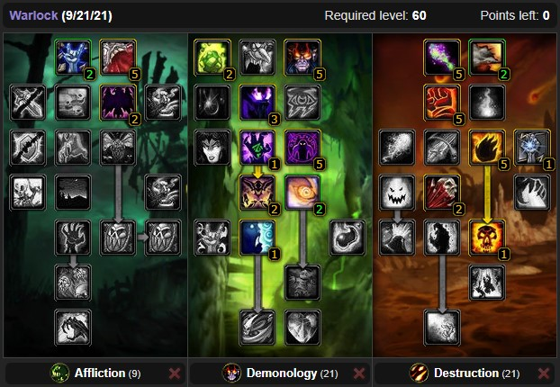
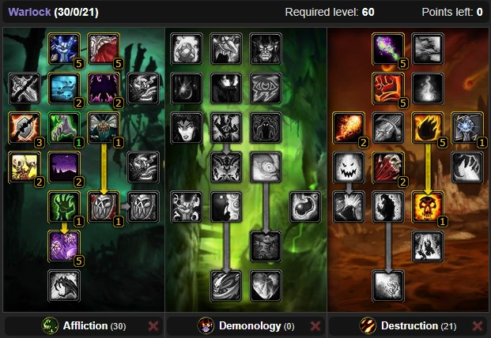
Druid
Balance, Feral, and Restoration — each catering to different roles and playstyles. Balance focuses on ranged spell damage and utility, allowing Druids to contribute as hybrid casters with powerful moonfire, starfire, and crowd control abilities. Feral emphasizes melee combat, shapeshifting, and survivability, making it ideal for tanking as a Bear or dealing damage as a Cat. Restoration specializes in healing over time and group support, providing strong raid healing and utility with rejuvenation and nature spells. Because Druids are highly versatile, talent choices allow players to adapt to almost any role, whether it’s solo leveling, PvP, or endgame raiding. Properly planned builds let Druids maximize their hybrid potential, balancing damage, healing, and survivability for any situation in Azeroth. Below, we have outlined the ideal talents for two different types of druids, one DPS, and one healing.
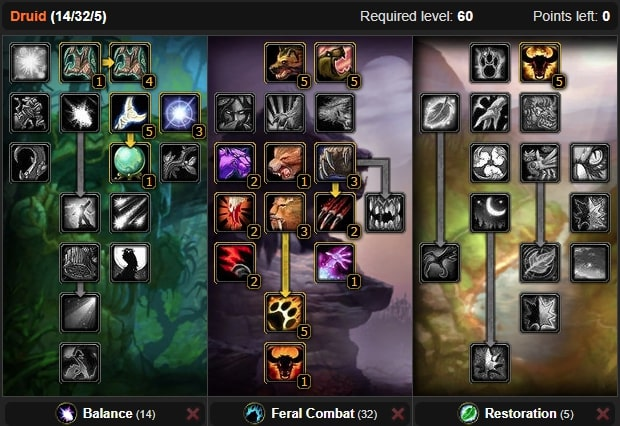
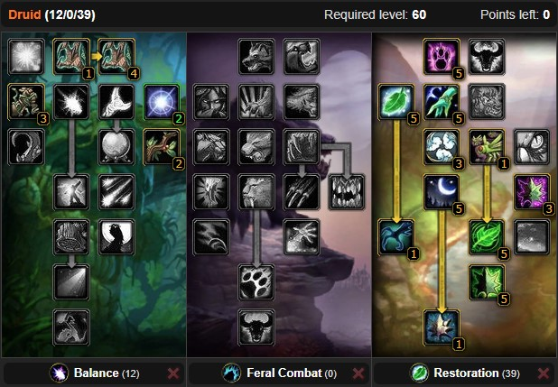